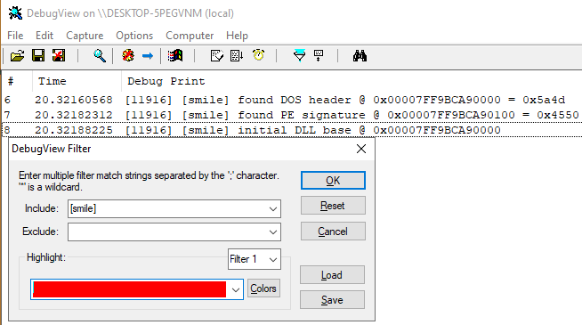
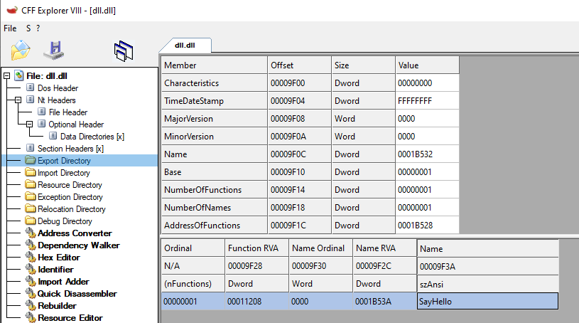
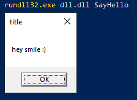

# DLLs
•
https://docs.microsoft.com/en-us/windows/win32/dlls/dllmain## Debugging
•
https://blog.nviso.eu/2020/08/04/debugging-dlls-3-techniques-to-help-you-get-started/### Use DbgView
You will have to enable to DbgView output first
•
https://stackoverflow.com/questions/12494300/no-output-from-debugviewTo print to DbgView with userland APIs you use
OutputDebugStringSo that you can use formatted strings, create a macro
•
https://stackoverflow.com/questions/29049686/is-there-a-better-way-to-pass-formatted-output-to-outputdebugstring#define DbgViewPrint(...) {char str[512]; sprintf_s(str, 512, __VA_ARGS__); OutputDebugStringA(str);}
DbgViewPrint("[smile] found DOS header @ 0x%p = 0x%x", (LPVOID)current_address, dos_header->e_magic);
DbgView gets filled with a lot of other program's prints, so use a filter
### Create a loader that loads the DLL into itself, then use printf
• [Debugging method 2: using Printf] -
https://blog.nviso.eu/2020/08/04/debugging-dlls-3-techniques-to-help-you-get-started/## Running/testing DLLs
You can run/test a dll using the command
rundll32.exe.
•
https://ss64.com/nt/rundll32.html•
https://docs.microsoft.com/en-us/windows-server/administration/windows-commands/rundll32rundll32.exe my.dll <function>rundll32.exe my.dll DllMainrundll32.exe user32.dll, LockWorkStationIf you're on a 64bit machine, there are 2 versions of rundll:
• 64-bit:
C:\Windows\System32\rundll32.exe - can run 32bit and 64bit DLLs
• 32-bit:
C:\Windows\SysWOW64\rundll32.exe - can only run 32bit DLLs
## Create exported function
•
https://docs.microsoft.com/en-us/cpp/build/exporting-from-a-dll-using-declspec-dllexport?view=msvc-160You create an exported function with:
__declspec(dllexport)e.g.
__declspec(dllexport) BOOL __cdecl SayHello(void)•
__declspec(dllexport) defines it as an export
•
__cdecl specifies to use the default calling convention for C and C++ programs.
◇ not necessary
#include <stdio.h>
#include <Windows.h>
#include "main.h"
__declspec(dllexport) BOOL __cdecl SayHello(void)
{
BOOL okay = TRUE;
MessageBoxA(NULL, "hey smile :)", "title", MB_OK);
return okay;
}
BOOL WINAPI DllMain(HINSTANCE hinstDLL, DWORD fdwReason, LPVOID lpReserved)
{
switch (fdwReason)
{
case DLL_PROCESS_ATTACH:
MessageBoxA(NULL, "hey! i've been attached :)", "smile", MB_OK);
break;
case DLL_THREAD_ATTACH:
break;
case DLL_THREAD_DETACH:
break;
case DLL_PROCESS_DETACH:
break;
}
return TRUE;
}
You then typically create a header file that stores prototypes for your exported functions.
MSDN recommends to use
#define DllExport __declspec(dllexport) to make your code cleaner.
#pragma once
#include <Windows.h>
#define DllExport __declspec(dllexport)
DllExport BOOL __cdecl SayHello(void);
Your function will now show up as an exported function
And you can execute it with
rundll32.exe